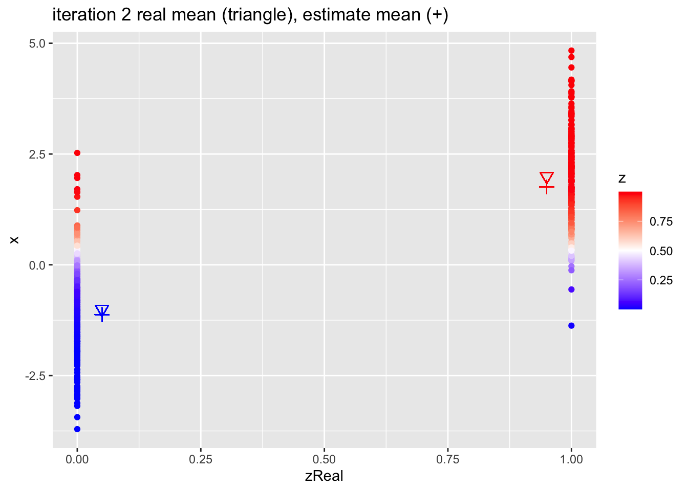
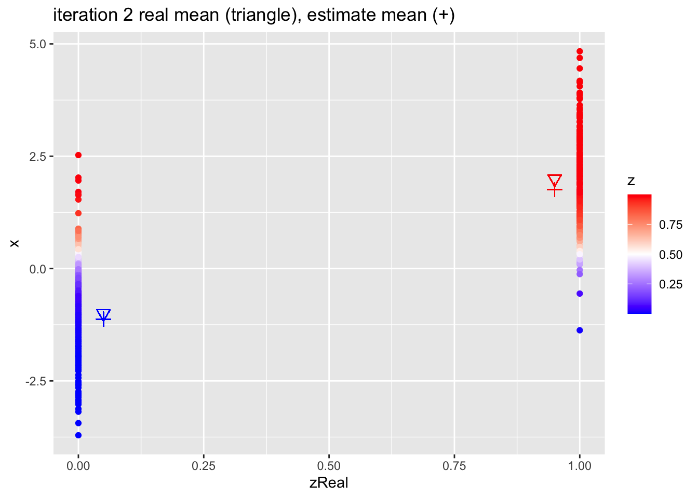
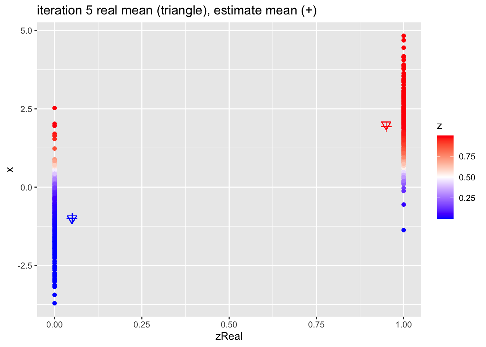
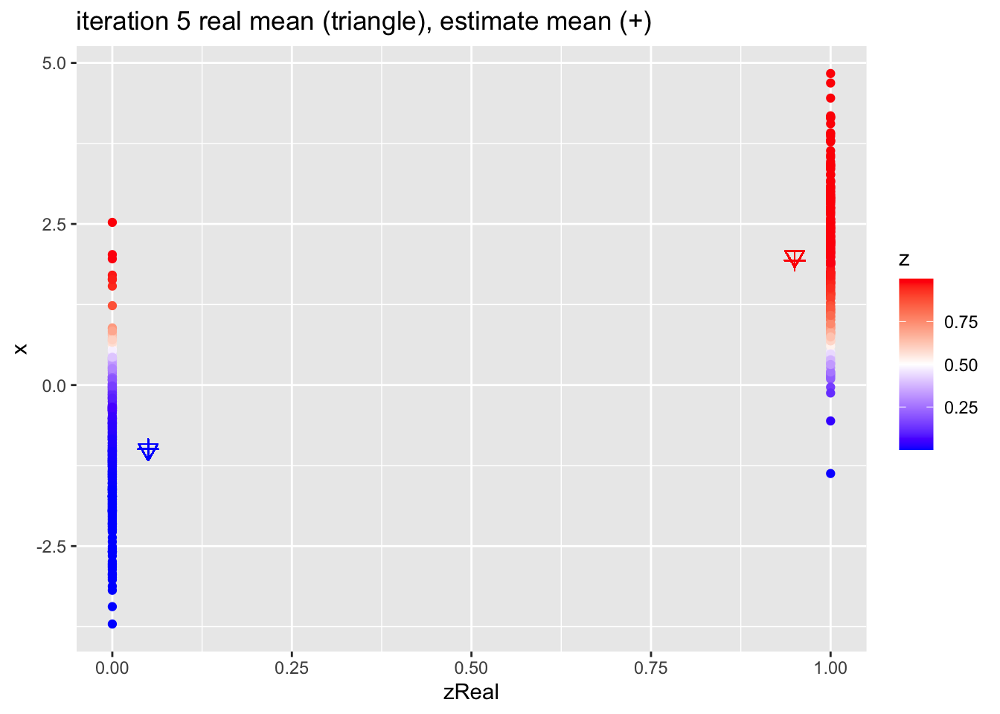

1 Example of model based clustering with two groups
We will use a toy example to explain the EM algorithm for model based clustering.
- Two groups \(k=1,2\)
- Univariate observations are observed \(x_i\) with \(i= 1, \dots, n\)
- The data of group j follows a normal distribution \(N(u_j,1)\) with a variance \(\sigma^2=1\) and a mean \(\mu_j\) that depends on the group \(j=1,2\).
The data follows the following mixture distribution:
\[f(x) = \pi_1 f_1(x) + (1-\pi_1) f_2(x)\]
With
\(\pi_1\) the probability that a random sample from the population belongs to group 1
\(f_1(x)\) the density of the data in group 1, i.e. \(N(\mu_1,1)\)
\(f_2(x)\) the density of the data in group 2, i.e. \(N(\mu_2,1)\).
Unknowns? Group membership \(z_i\), the group means \(\mu_j\) and the proportion of subjects in the population of group 1 \(\pi_1\) are unknown.
We can estimate the model parameters \(\boldsymbol{\theta} = [\mu_1,\mu_2,\pi_1]^T\) using maximum likelihood.
\[ L\left(\mu_1,\mu_2,\pi_1\vert \mathbf{X}\right) = \prod_{i=1}^n \left[\pi_1 f_1(x_i) + (1-\pi_1) f_2(x_i) \right]\]
It is easier to maximise the log-likelihood:
\[ l\left(\mu_1,\mu_2,\pi_1\vert \mathbf{X}\right) = \sum_{i=1}^n \log\left[\pi_1 f_1(x_i) + (1-\pi_1) f_2(x_i) \right]\]
The optimisation is difficult because we have to take the log of a sum and the likelihood does not factorise further.
2 Simulate toy Data
library(tidyverse)
mu1Real <- 2
mu2Real <- -1
pi1Real = .4
set.seed(114)
zReal <- rbinom(500, size = 1, prob = pi1Real)
x <- ifelse(zReal==1, rnorm(500,mean=mu1Real), rnorm(500, mean=mu2Real))
data.frame(x) %>%
ggplot(aes(x = x)) +
geom_histogram()
data.frame(x,zReal) %>%
ggplot(aes(zReal,x,color=zReal)) +
geom_point() +
scale_colour_gradient2(
low = "blue",
mid="white",
high="red",
midpoint = 0.5) +
geom_point(x=.95,y=mu1Real, shape=25, col="red", size=3) +
geom_point(x=0.05,y=mu2Real, shape=25, col="blue", size=3) +
ggtitle("Simulated data with real group means (triangles)")
3 Parameter estimation
If we would know the cluster membership \(z_{i1}\) \[z_{i1}=\left\{ \begin{matrix} 1 & \text{if } x_i \text{ belongs to group 1}\\ 0 & \text{if } x_i \text{ belongs to group 2} \end{matrix}\right.\]
with \(z_{i1}\) follows a Bernoulli distribution
\[B(\pi_1)=\pi_1^{z_{i1}}(1-\pi_1)^{(1-z_{i1})} \]
Then the density of \(x_i\) given \(z_{i1}\) becomes
\[f(x_i\vert z_{i1}) = f_1(x_i)^{z_{i1}}f_2(x_i)^{1-z_{i1}}\]
and the joint distribution of \(z_{i1}\) and \(x_i\) then becomes \[\begin{eqnarray} f(x_i, z_{i1})&=&f(x_i\vert z_{i1}) f(z_{i1})\\ &=& f_1(x_i)^{z_{i1}}f_2(x_i)^{1-z_{i1}}\pi_1^{z_{i1}}(1-\pi_1)^{(1-z_{ik})} \end{eqnarray}\]
and the log likelihood of the complete data becomes
\[ l\left(\mu_1,\mu_2,\pi_1\vert \mathbf{X, Z}\right) = \sum_{i=1}^n z_{i1} \log \left[\pi_1 f_1(x_i)\right] + (1-z_{i1})\log \left[(1-\pi_1) f_2(x_i)\right] \]
- Note, that in the notation of the Frayley and Raftery (1998) \(z_2=1-z_1\) and \(\pi_2= 1- \pi_1\)
3.1 EM algorithm
If we would know the cluster membership, we could estimate all model parameters based on the complete likelihood.
Note, that the complete likelihood also factorises nicely!
However, the cluster membership is unknown.
The EM algorithm has been developed for missing data problems.
It is an iterative algorithm that consists of two steps:
E-step: calculate the expected log likelihood given the data and the current model parameter estimates
M-step: maximise the expected log-likelihood
Iterate between 1 and 2 until convergence.
3.1.1 E-step
In iteration m+1
\[\begin{eqnarray} Q\left(\mu_1,\mu_2,\pi_1\vert \mathbf{X, Z}\right)&=& E\left[l\left(\mu_1,\mu_2,\pi_1\vert \mathbf{X, Z}\right)\vert \mathbf{X}, \mu_1=\mu_1^m, \mu_2=\mu_2^m, \pi_1=\pi_1^m\right]\\ &=& E\left[\sum_{i=1}^n z_{i1} \log\left[\pi_1 f_1(x_i)\right] + (1-z_{i1})\log \left[(1-\pi_1) f_2(x_i)\right]\vert \mathbf{X}, \mu_1=\mu_1^m, \mu_2=\mu_2^m, \pi_1=\pi_1^m\right]\\ &=&\sum_{i=1}^n E\left[z_{i1}\vert x_i,\mu_1=\mu_1^m, \mu_2=\mu_2^m, \pi_1=\pi_1^m\right]\log \left[\pi_1 f_1(x_i)\right] + \sum_{i=1}^n \left(1- E\left[z_{i1}\vert x_i,\mu_1=\mu_1^m, \mu_2=\mu_2^m, \pi_1=\pi_1^m\right]\right)\log \left[(1-\pi_1) f_2(x_i)\right] \end{eqnarray}\]
Note, that the expected log likelihood simplifies to replacing the unknown class memberships in the complete likelihood by their expected values.
\[\begin{eqnarray} E\left[z_{i1}\vert \mathbf{X},\mu_1=\mu_1^m, \mu_2=\mu_2^m, \pi_1=\pi_1^m\right] &=& 1 \times f(z_{i1}=1 \vert x_i,\mu_1=\mu_1^m, \mu_2=\mu_2^m, \pi_1=\pi_1^m) + 0 \times f(z_{i1}=0 \vert x_i,\mu_1=\mu_1^m, \mu_2=\mu_2^m, \pi_1=\pi_1^m) \\\\ &=& f(z_{i1}= 1 \vert x_i,\mu_1=\mu_1^m, \mu_2=\mu_2^m, \pi_1=\pi_1^m)\\\\ &=& \frac{f(z=1,x_i)}{f(x_i)}\\\\ &=& \frac{\pi^m_1 f_1(x_i)}{\pi^m_1 f_1(x_i)+(1-\pi^m_1) f_2(x_i)} \end{eqnarray}\]
We will refer to the expected class membership as \(\hat z_{i1}^{m+1}\)
3.1.2 M-step
Maximise the expected log-likelihood to obtain the unknown model parameters:
\[ Q\left(\mu_1,\mu_2,\pi_1\vert \mathbf{X, Z}\right) = \sum_{i=1}^n \hat z_{i1}^m \log \pi_1 + \sum_{i=1}^n \hat z_{i1}^m \log f_1(x_i) + \sum_{i=1}^n\left(1- \hat z_{i1}\right)\log (1-\pi_1) + \sum_{i=1}^n\left(1- \hat z_{i1}\right)\log f_2(x_i) \]
So we observe that the expected log likelihood implies an estimation orthogonality between the normal distributions and the Bernoulli distribution.
So the parameter estimates that maximise the expected log-likelihood become:
\[ \hat \pi_1^{m+1} =\frac{\sum_{i=1}^n \hat z_{i1}^{m+1}}{n}\] \[ \hat \mu_1^{m+1} = \frac{\sum_{i=1}^n \hat z_{i1}^{m+1} x_i}{\sum_{i=1}^n \hat z_{i1}^{m+1}}\] \[ \hat \mu_2^{m+1} = \frac{\sum_{i=1}^n (1- \hat z_{i1}^{m+1}) x_i}{\sum_{i=1}^n (1-\hat z_{i1}^{m+1})} \]
4 Example
4.1 Initialize
z <- as.double(x > 0)
n <- length(z)
p <- data.frame(x,zReal,z) %>%
ggplot(aes(zReal,x,color=z)) +
geom_point() +
scale_colour_gradient2(
low = "blue",
mid="white",
high="red",
midpoint = 0.5) +
geom_point(x=.95,y=mu1Real, shape=25, col="red", size=3) +
geom_point(x=0.05,y=mu2Real, shape=25, col="blue", size=3) +
ggtitle("Simulated data with real group means (triangles)")
p
4.2 EM algorithm
for (k in 1:10)
{
## M-step
pi1 <- sum(z)/n
mu1 <- sum(z * x)/sum(z)
mu2 <- sum((1-z) * x)/sum(1-z)
## E-step
d1 <- dnorm(x,mean=mu1)
d2 <- dnorm(x,mean=mu2)
d <- pi1 * d1 + (1-pi1)*d2
z <- pi1*d1/d
p <- data.frame(x,zReal,z) %>%
ggplot(aes(zReal,x,color=z)) +
geom_point() +
scale_colour_gradient2(
low = "blue",
mid="white",
high="red",
midpoint = 0.5) +
geom_point(x=.95,y=mu1Real, shape=25, col="red", size=3) +
geom_point(x=0.05,y=mu2Real, shape=25, col="blue", size=3) +
geom_point(x=.95,y=mu1, shape=3, col="red", size=3) +
geom_point(x=.05,y=mu2, shape=3, col="blue", size=3) +
ggtitle(paste0("iteration ",k, " real mean (triangle), estimate mean (+)"))
print(p)
} 

 



4.2.1 Estimates
| parameter | population | initial | estimate |
|---|---|---|---|
| mu1 | 2.0 | 1.715 | 2.020 |
| mu2 | -1.0 | -1.270 | -0.935 |
| pi1 | 0.4 | 0.512 | 0.404 |
Session info
Session info
#> [1] "2024-10-07 12:40:57 CEST"#> ─ Session info ───────────────────────────────────────────────────────────────
#> setting value
#> version R version 4.4.0 RC (2024-04-16 r86468)
#> os macOS Big Sur 11.6
#> system aarch64, darwin20
#> ui X11
#> language (EN)
#> collate en_US.UTF-8
#> ctype en_US.UTF-8
#> tz Europe/Brussels
#> date 2024-10-07
#> pandoc 3.1.1 @ /Applications/RStudio.app/Contents/Resources/app/quarto/bin/tools/ (via rmarkdown)
#>
#> ─ Packages ───────────────────────────────────────────────────────────────────
#> package * version date (UTC) lib source
#> bookdown 0.40 2024-07-02 [1] CRAN (R 4.4.0)
#> bslib 0.8.0 2024-07-29 [1] CRAN (R 4.4.0)
#> cachem 1.1.0 2024-05-16 [1] CRAN (R 4.4.0)
#> cli 3.6.3 2024-06-21 [1] CRAN (R 4.4.0)
#> colorspace 2.1-1 2024-07-26 [1] CRAN (R 4.4.0)
#> digest 0.6.37 2024-08-19 [1] CRAN (R 4.4.1)
#> dplyr * 1.1.4 2023-11-17 [1] CRAN (R 4.4.0)
#> evaluate 1.0.0 2024-09-17 [1] CRAN (R 4.4.1)
#> fansi 1.0.6 2023-12-08 [1] CRAN (R 4.4.0)
#> farver 2.1.2 2024-05-13 [1] CRAN (R 4.4.0)
#> fastmap 1.2.0 2024-05-15 [1] CRAN (R 4.4.0)
#> fontawesome 0.5.2 2023-08-19 [1] CRAN (R 4.4.0)
#> forcats * 1.0.0 2023-01-29 [1] CRAN (R 4.4.0)
#> generics 0.1.3 2022-07-05 [1] CRAN (R 4.4.0)
#> ggplot2 * 3.5.1 2024-04-23 [1] CRAN (R 4.4.0)
#> glue 1.8.0 2024-09-30 [1] CRAN (R 4.4.1)
#> gtable 0.3.5 2024-04-22 [1] CRAN (R 4.4.0)
#> highr 0.11 2024-05-26 [1] CRAN (R 4.4.0)
#> hms 1.1.3 2023-03-21 [1] CRAN (R 4.4.0)
#> htmltools 0.5.8.1 2024-04-04 [1] CRAN (R 4.4.0)
#> jquerylib 0.1.4 2021-04-26 [1] CRAN (R 4.4.0)
#> jsonlite 1.8.9 2024-09-20 [1] CRAN (R 4.4.1)
#> knitr 1.48 2024-07-07 [1] CRAN (R 4.4.0)
#> labeling 0.4.3 2023-08-29 [1] CRAN (R 4.4.0)
#> lifecycle 1.0.4 2023-11-07 [1] CRAN (R 4.4.0)
#> lubridate * 1.9.3 2023-09-27 [1] CRAN (R 4.4.0)
#> magrittr 2.0.3 2022-03-30 [1] CRAN (R 4.4.0)
#> munsell 0.5.1 2024-04-01 [1] CRAN (R 4.4.0)
#> pillar 1.9.0 2023-03-22 [1] CRAN (R 4.4.0)
#> pkgconfig 2.0.3 2019-09-22 [1] CRAN (R 4.4.0)
#> purrr * 1.0.2 2023-08-10 [1] CRAN (R 4.4.0)
#> R6 2.5.1 2021-08-19 [1] CRAN (R 4.4.0)
#> readr * 2.1.5 2024-01-10 [1] CRAN (R 4.4.0)
#> rlang 1.1.4 2024-06-04 [1] CRAN (R 4.4.0)
#> rmarkdown 2.28 2024-08-17 [1] CRAN (R 4.4.0)
#> rstudioapi 0.16.0 2024-03-24 [1] CRAN (R 4.4.0)
#> sass 0.4.9 2024-03-15 [1] CRAN (R 4.4.0)
#> scales 1.3.0 2023-11-28 [1] CRAN (R 4.4.0)
#> sessioninfo 1.2.2 2021-12-06 [1] CRAN (R 4.4.0)
#> stringi 1.8.4 2024-05-06 [1] CRAN (R 4.4.0)
#> stringr * 1.5.1 2023-11-14 [1] CRAN (R 4.4.0)
#> tibble * 3.2.1 2023-03-20 [1] CRAN (R 4.4.0)
#> tidyr * 1.3.1 2024-01-24 [1] CRAN (R 4.4.0)
#> tidyselect 1.2.1 2024-03-11 [1] CRAN (R 4.4.0)
#> tidyverse * 2.0.0 2023-02-22 [1] CRAN (R 4.4.0)
#> timechange 0.3.0 2024-01-18 [1] CRAN (R 4.4.0)
#> tzdb 0.4.0 2023-05-12 [1] CRAN (R 4.4.0)
#> utf8 1.2.4 2023-10-22 [1] CRAN (R 4.4.0)
#> vctrs 0.6.5 2023-12-01 [1] CRAN (R 4.4.0)
#> withr 3.0.1 2024-07-31 [1] CRAN (R 4.4.0)
#> xfun 0.47 2024-08-17 [1] CRAN (R 4.4.0)
#> yaml 2.3.10 2024-07-26 [1] CRAN (R 4.4.0)
#>
#> [1] /Library/Frameworks/R.framework/Versions/4.4-arm64/Resources/library
#>
#> ──────────────────────────────────────────────────────────────────────────────